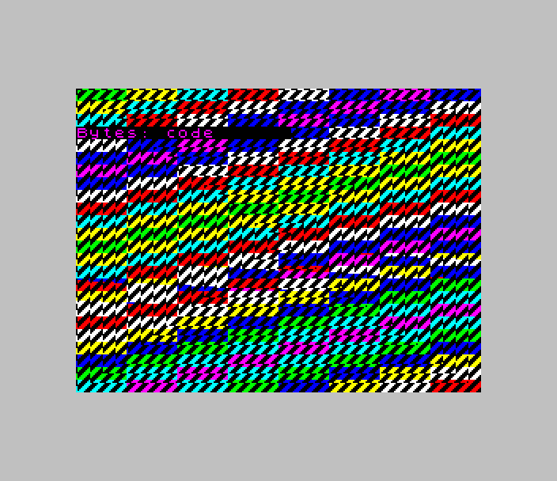

13. Releasing
A finished Spectrum program is released as a tape: a .tap or .tzx file that any emulator loads, that a divMMC or similar card interface loads on a real machine, and that can be played into a real Spectrum's EAR socket as sound. This chapter is about making a good one, with its own loader and a loading screen, and about the other ways to release.
How the ROM saves a tape
The ROM saves each file as two blocks: a 17-byte header ("Allow seventeen locations for the header", <https://skoolkid.github.io/rom/asm/0605.html>) and the data. Each block starts with a flag byte, "+00 (header block) or +FF (data block)", and ends with a parity byte, all its bytes XORed: "the final byte sent is the parity byte" (<https://skoolkid.github.io/rom/asm/04C2.html>). The header holds:
| Bytes | What |
|---|---|
| 0 | type: 0 a BASIC program, 1 a number array, 2 a character array, 3 bytes (CODE, and SCREEN$) |
| 1–10 | the name, padded with spaces |
| 11–12 | the data's length |
| 13–14 | for CODE, where it loads; for a program, the line to start at (32768 or more: none) |
| 15–16 | for a program, its length without its variables |
On tape each block is a pilot tone (pulses of 2,168 T-states: 8,063 of them before a header, 3,223 before data), two sync pulses (667 and 735), then the bits, each two pulses: 855 T-states each for a 0, 1,710 for a 1 (the TZX format's description of the ROM's timing, <https://worldofspectrum.net/TZXformat.html>). That's about 1,400 bits a second (if half are 0s), so a 48K program takes about five minutes, and a loading screen 40 seconds of it.
.tap and .tzx
A .tap file is those blocks one after another, each with "two bytes specifying how many bytes will follow (not counting the two length bytes)" (<https://worldofspectrum.org/faq/reference/formats.htm>), and the flag and parity included. Nothing about timing: every block is played the ROM's way. It's what Limoniter's F9 makes, and what nearly everything loads.
A .tzx keeps a tape as it really was: each block with its own timing. Block $10 is a standard block ("Data as in .TAP files", with a pause after); block $11 is a turbo block, with every pulse length and pulse count given; $12 to $15 are pure tones, pulse sequences, pure data and direct recordings, $19 is a generalised data block, and there are blocks for pauses, groups, text and archive information (the TZX format, above). Use .tzx when the tape isn't standard: a turbo loader, a custom loading scheme, or to keep the archive information (title, authors, year) with the file.
A loader of your own
F9's tape has a loader of one line, made for running the program while you write it. A release's tape usually has more: a loading screen, and a loader that runs itself. examples/ch13_tape.asm makes such a tape with sjasmplus's SAVETAP, which Limoniter's assembler does too, so F9 runs the tape the source saved:
savetap "ch13_tape.tap",BASIC,"HowToCode",Loader,LoaderEnd-Loader,10
savetap "ch13_tape.tap",CODE,"screen",$4000,6912
savetap "ch13_tape.tap",CODE,"code",$8000,CodeEnd-$8000The first saves a BASIC program that starts itself at line 10 (the 10 at the end); the second a screen (a CODE file of 6,912 bytes at 16384 is what SCREEN$ saves); the third the code. The loader is written in the source as the Spectrum keeps a BASIC line: its number (high byte first, unlike everything else on the Z80), its length, the keywords as single-byte tokens, and ENTER:
; 10 CLEAR VAL "32767": LOAD ""SCREEN$ : LOAD ""CODE : RANDOMIZE USR VAL "32768"
Loader:
db 0,10 ; line 10, high byte first
dw LineEnd-LineStart ; its length, low byte first
LineStart:
db $FD,$B0,'"32767":' ; CLEAR VAL "32767":
db $EF,'""',$AA,':' ; LOAD ""SCREEN$ :
db $EF,'""',$AF,':' ; LOAD ""CODE :
db $F9,$C0,$B0,'"32768"' ; RANDOMIZE USR VAL "32768"
db $0D ; ENTER ends the line
LineEnd:VAL "32767" rather than 32767 is the usual loader trick: a number typed into a line is kept as its digits and a hidden five-byte copy, and VAL of a string avoids the copy (and makes the line shorter). The loading screen is made by examples/ch13_make_screen.py, and incbined into the screen's own memory, at $4000, so SAVETAP can save it from there.

In ZEsarUX the tape loads as a person would load it: LOAD "", the loader runs itself, the screen appears, then the code runs. One thing the example doesn't do, that releases often do: the ROM prints each file's name ("Bytes: screen") as it finds it, over the loading screen. Give the code no header (a headerless block, SAVETAP ...,HEADLESS,..., loaded by a few lines of machine code calling the ROM's LD-BYTES rather than by BASIC), and nothing is printed.
Turbo loaders
A turbo loader is a program's own tape routine, loading faster than the ROM by using shorter pulses (and sometimes a striped border or a countdown, for show). It's loaded by the ROM first, then loads the rest itself. In a .tzx its blocks are type $11, with their own timings. Two points of etiquette:
- Release a standard version too. Turbo blocks don't load on every card interface or with every emulator's fast-loading, and a plain
.tapalways does. - Don't fight the person loading it. Copy protection made sense on cassettes sold in shops; on a free release it only stops people playing it, and preserving it.
This guide has no turbo loader example: that part is thin. The TZX format's description of block $11, and the ROM's own LD-BYTES (SkoolKit's disassembly, from $0556), are where to start.
Snapshots
A snapshot (.sna, .z80) is the whole machine at a moment, loaded at once: handy for a playable preview, and for emulators, but it can't be loaded on a real Spectrum without an interface that does it. A .sna is 27 bytes of registers then 48K of RAM, with the program counter on the stack; the 128K version adds the paging and the other banks, "The third RAM bank saved is always the one currently paged" (<https://worldofspectrum.org/faq/reference/formats.htm>). .z80 is compressed, and its versions 2 and 3 describe 128K machines and more (<https://worldofspectrum.org/faq/reference/z80format.htm>). Limoniter's --assemble makes a .sna of a program loaded and about to start (chapter 2), which is how this guide's examples are run in Fuse.
The Next
A Next program is released as a .nex (chapter 11), which the Next's browser runs, or as a "dot command" (a small program in the SD card's dot folder, run by typing .name). Many Next releases also come as a folder of files to copy to the card. Limoniter sends a file to a Next over Wi-Fi with NextSync (chapter 2).
Where to put it
- Spectrum Computing (<https://spectrumcomputing.co.uk/>), with its ZXDB database, is where Spectrum software is catalogued and archived today; submit a release there.
- Pouët (<https://www.pouet.net/>) and Demozoo (<https://demozoo.org/>) list demos, by platform and party.
- itch.io is where many new Spectrum and Next games are given away or sold.
Put a text file with it: what it is, which machines it runs on (and which it was tested on), who made it, and its licence. And put the tape in a form that will still load in thirty years: a plain .tap or .tzx, not just an audio file.